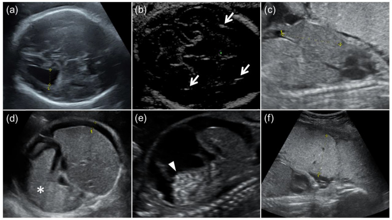
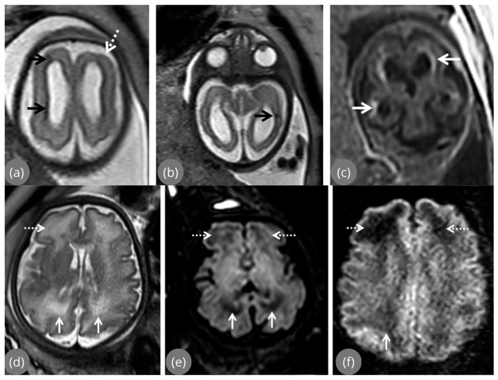
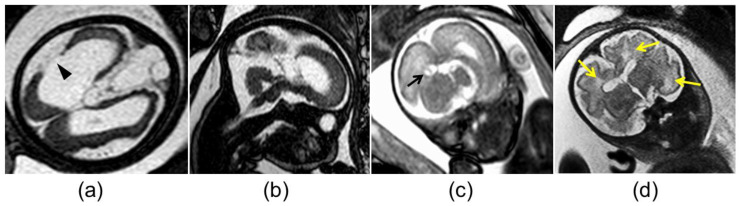

6102 — Nhiễm CMV bào thai (congenital CMV): vôi hóa quanh não thất, thiểu sản tiểu não mắc phải vs di truyền và quyết định tầm soát – tư vấn
Tags: pattern:voi-hoa-quanh-nao-that pattern:bat-thuong-vo-nao pattern:thi-u-san-tieu-nao vung:nao-thai vung:nhau-thai protocol:MRI-thai protocol:sieua-am-thai
Mức chắc chắn (certainty): tổng hợp y văn (literature synthesis) — tổng hợp từ 1 tổng quan hệ thống 59 nghiên cứu về siêu âm/MRI thai (Stefanska 2026), 1 đoàn hệ 18 thai CMV có/không chậm tăng trưởng (Tanimura 2023), 1 đoàn hệ 45 thai (Zhong 2026), 1 tổng quan về nhiễm CMV trong thai kỳ (Auriti 2026) và 2 đoàn hệ điều trị valacyclovir; mọi số liệu đối chiếu trực tiếp PMCID ghi trong sources.md.
1. Tổng quan bệnh học – cơ chế hình ảnh
- Tác nhân – dịch tễ: cytomegalovirus (CMV) là herpesvirus DNA sợi đôi, lây dọc từ mẹ sang thai qua nhau thai (transplacental). Huyết thanh dương tính ở > 80% phụ nữ tuổi sinh sản toàn cầu; tỷ lệ nhiễm bẩm sinh (congenital CMV – cCMV) khoảng 0,64% (khoảng 0,2–2,4% tùy quần thể). Đây là nguyên nhân không do di truyền hàng đầu của điếc tiếp nhận (sensorineural hearing loss) và chậm phát triển ở trẻ.
- Vì sao thời điểm nhiễm quan trọng hơn mức độ nhiễm: nguy cơ di chứng muộn (late sequelae) của nhiễm tiên phát (primary infection) là 23% khi nhiễm 3 tháng đầu, chỉ 0,1% khi nhiễm 3 tháng giữa và 0% khi nhiễm 3 tháng cuối (gộp phân tích của Chatzakis và Ville, dẫn qua Auriti 2026). Nói cách khác: nhiễm muộn truyền bệnh nhiều hơn nhưng ít để lại di chứng thần kinh hơn; nhiễm sớm mới là cửa sổ nguy hiểm vì não thai đang ở giai đoạn sinh sản – di trú tế bào mạnh nhất.
- TẠI SAO vôi hóa lại nằm QUANH NÃO THẤT: CMV hướng tế bào nội mô mạch máu và tế bào thần kinh đệm. Vùng ma trận mầm (germinal matrix) quanh não thất bên là nơi giàu mạch nhất và là nơi sinh sản tế bào thần kinh mạnh nhất trong 3 tháng giữa → viêm nội mạc, thiếu máu cục bộ, hoại tử rồi lắng đọng canxi phosphate vô định hình. Canxi có hệ số suy giảm tuyến tính (attenuation) rất cao, nên trên siêu âm là echo dày kèm bóng lưng (acoustic shadowing), trên CT là HU > 100 (không đo được trên MRI), trên MRI T2/T2* là giảm tín hiệu do thiếu proton tự do.
- TẠI SAO có nang dưới nội tủy (subependymal pseudocyst): hoại tử – tiêu mô tại ma trận mầm tạo khoang chứa dịch, thành do tế bào thần kinh đệm phản ứng. Dịch tự do → T2 tăng tín hiệu mạnh, T1 giảm, không ngấm thuốc, thường xếp thành chuỗi dọc thành não thất.
- TẠI SAO có bất thường vỏ não (polymicrogyria, pachygyria, heterotopia): viêm làm gián đoạn quá trình di trú (neuronal migration) và sắp xếp lớp vỏ từ tuần 12–24. Hệ quả là vỏ não dày bất thường, nhiều nếp nhăn nhỏ, bờ chất trắng–vỏ mờ nhòe trên T2; đây là tổn thương thường chỉ thấy trên MRI, đặc biệt khi khu trú ở thùy thái dương.
- TẠI SAO có thiểu sản tiểu não (cerebellar hypoplasia): lớp hạt ngoài (external granular layer) của tiểu não sinh sản mạnh nhất vào 3 tháng giữa; CMV phá hủy lớp này → tiểu não nhỏ, khe lá rộng, hạch răng cưa giảm thể tích, có thể kèm thiểu sản cầu não. Đây là điểm giao thoa nguy hiểm với thiểu sản cầu–tiểu não di truyền (pontocerebellar hypoplasia – PCH) — cùng hình ảnh tiểu não nhỏ nhưng cơ chế và tiên lượng hoàn toàn khác.
- Ngưỡng định lượng dùng trong bài (theo Stefanska 2026, Table 2): dãn não thất bên (ventriculomegaly) khi > 10 mm; ≥ 15 mm = nặng; bể lớn (cisterna magna) ≥ 8 mm = rộng; đầu nhỏ (microcephaly) khi chu vi đầu < −2 SD. Trong đoàn hệ Tanimura, dãn não thất 1,3 cm ở 31 tuần là ví dụ mức "trung bình".
- Tần suất tổn thương trên siêu âm (Stefanska 2026, Table 3): dãn não thất 6,1%, vôi hóa nội sọ 6,3%, đầu nhỏ 6%, ruột echo dày 13%, chậm tăng trưởng (FGR/SGA) 9%, cổ trướng 4,2%, gan–lách to 3,8%, đa ối < 1%, thiểu ối 3,4%, nhau dày–vôi hóa 2%. Các tỷ lệ này là trên toàn bộ thai nhiễm CMV, không phải trên thai có triệu chứng — vì đa số thai nhiễm không có bất thường nào trên siêu âm.
- Giới hạn của siêu âm (đoàn hệ Tanimura, 8 thai FGR + 10 thai không FGR): độ nhạy phát hiện dãn não thất chỉ 66,7% ở nhóm FGR vs 88,9% ở nhóm không FGR; vôi hóa nội sọ 20% ở cả hai nhóm; gan to 40% vs 100%. Kết luận thực hành: FGR làm siêu âm kém nhạy hơn, dễ bỏ sót CMV.
- Giá trị cộng thêm của MRI (đoàn hệ 95 thai có siêu âm chuyên sâu bình thường): MRI phát hiện thêm bất thường cấu trúc ở 10,5%; trong số đó dị dạng phát triển vỏ não 40%, bệnh não phá hủy chất trắng 20%, vôi hóa ma trận mầm/hạch nền 10%, bất thường phức hợp 30%. Không có bất thường não thất, quanh não thất, đường giữa hay hố sau nào chỉ thấy trên MRI. Tải lượng virus dịch ối > 100.000 copies/mL là yếu tố dự báo độc lập của việc MRI phát hiện thêm tổn thương.
2. Mẫu hình + chẩn đoán phân biệt theo vị trí (gamut)
- Mẫu hình A — vôi hóa dạng chấm/đường QUANH NÃO THẤT + nang dưới nội tủy: gamut hẹp nhất gồm CMV bào thai, toxoplasmosis bẩm sinh, nhiễm lymphocytic choriomeningitis virus (LCMV), Zika bào thai (vôi hóa thường ở ranh giới vỏ–chất trắng hơn là quanh não thất) và bệnh não do interferon type I (Aicardi–Goutières) — thể "nhiễm trùng giả" di truyền. CMV là nguyên nhân hay gặp nhất khi vôi hóa ôm quanh não thất và có nang dưới nội tủy.
- Mẫu hình B — bất thường vỏ não (polymicrogyria/pachygyria) đơn độc hoặc kèm dãn não thất: gamut gồm CMV, Zika, thiếu máu–giảm tưới máu não mạn (đặc biệt trong song thai một bánh nhau), bệnh ty thể, đột biến GPR56/TUBB2B/TUBA1A; và "giả polymicrogyria" do artifact chuyển động/perfusion trên MRI thai — bắt buộc loại trừ trước khi kết luận.
- Mẫu hình C — tiểu não nhỏ / thiểu sản cầu–tiểu não: phân biệt CMV mắc phải với PCH di truyền (RELN, TSEN54, EXOSC3…), Dandy–Walker, Chiari II, thiểu sản tiểu não do thuốc/teratogen. Chốt phân biệt: CMV có bằng chứng nhiễm + tổn thương chất trắng/vôi hóa/nang, PCH di truyền thường đơn độc, đối xứng, không vôi hóa, có thể kèm cầu não nhỏ và tiền sử gia đình.
- Mẫu hình D — đầu nhỏ (microcephaly) ± vôi hóa lan tỏa: CMV, toxoplasmosis, Zika, Aicardi–Goutières, đầu nhỏ di truyền (microcephaly primary hereditary – MCPH), ngộ độc rượu bào thai. Đầu nhỏ < −3 SD kèm vôi hóa quanh não thất gần như chốt CMV.
- Mẫu hình E — bất thường ngoài thần kinh đơn độc (ruột echo dày, gan–lách to, cổ trướng, nhau dày): CMV, toxoplasmosis, parvovirus B19, hội chứng truyền máu song thai, bất thường nhiễm sắc thể. Không được chẩn đoán CMV chỉ dựa trên ruột echo dày — phải phối hợp huyết thanh học/PCR.
- Gợi nhớ lâm sàng – hình ảnh: Periventricular calcification + Cysts subependymal + Cortical malformation + Cerebellar hypoplasia = 4C của CMV. Càng nhiều chữ C, xác suất CMV càng cao và tiên lượng càng xấu.
3. Bảng so sánh phân biệt (ma trận đối chiếu)
| Thực thể (entity) | Hình ảnh điển hình (US/MRI thai) | Chốt vào (rule-in) | Chốt loại (rule-out) | Gợi ý xác nhận |
|---|---|---|---|---|
| CMV bào thai | Vôi hóa quanh não thất dạng chấm/đường, nang dưới nội tủy, dãn não thất, polymicrogyria (thùy thái dương), tiểu não nhỏ | Vôi hóa quanh não thất + nang dưới nội tủy + IgM/IgG avidity thấp hoặc PCR dịch ối dương | Vôi hóa rải rác khắp nhu mô, không nang dưới nội tủy → nghĩ toxoplasmosis | Siêu âm chuyên sâu lặp 2–3 tuần; MRI 28–32 tuần; PCR CMV dịch ối sau 21 tuần |
| Toxoplasmosis bẩm sinh | Vôi hóa rải rác vỏ não/hạch nền, dãn não thất nặng (do viêm màng não), đầu nhỏ; viêm hắc–võng mạc | Vôi hóa rải rác + dãn não thất tiến triển + tổn thương mắt | Vôi hóa khu trú quanh não thất + nang dưới nội tủy → nghĩ CMV | Huyết thanh học toxoplasma (IgM/IgG avidity), PCR dịch ối, soi đáy mắt sau sinh |
| Zika bào thai | Vôi hóa ở ranh giới vỏ–chất trắng, mỏng vỏ, dãn não thất, thể tích não giảm, có thể arthrogryposis | Mỏng vỏ + vôi hóa ranh giới + dịch tễ vùng lưu hành | Vôi hóa quanh não thất dày, nang dưới nội tủy → nghĩ CMV | RT-PCR Zika huyết thanh/nước tiểu mẹ, IgM thai; siêu âm khớp |
| PCH di truyền | Tiểu não nhỏ đối xứng, cầu não nhỏ, bán cầu tiểu não nhẵn; không vôi hóa, không nang dưới nội tủy | Bất thường đối xứng cầu–tiểu não + không bằng chứng nhiễm + tiền sử gia đình | Có vôi hóa/nang quanh não thất, bất đối xứng → nghĩ CMV | MRI thai + MRI sau sinh; panel gen PCH; tư vấn di truyền (bài 675, 659) |
| Aicardi–Goutières | Vôi hóa hạch nền/vỏ, teo não, thanh dịch lympho bào tăng; hình ảnh giống "nhiễm trùng" | Vôi hóa + tăng interferon alpha/lympho bào dịch não tủy + không tìm được tác nhân | PCR CMV dương + vôi hóa quanh não thất đặc trưng → nghĩ CMV | Gen TREX1/RNASEH2; interferon signature |
| Thiếu máu–giảm tưới máu (song thai) | Tổn thương chất trắng quanh não thất, polymicrogyria, teo vỏ ở thai nhỏ hơn | Bối cảnh song thai một bánh nhau, chênh lệch cân nặng, không bằng chứng nhiễm | Vôi hóa + nang dưới nội tủy + PCR dương → CMV | Siêu âm Doppler, MRI thai, theo dõi song thai (bài 566, 587) |
| Giả polymicrogyria (artifact) | Bờ vỏ "nhăn" thoáng qua, đổi giữa các lát cắt/lần chụp, thường ở vùng gần xương sọ | Bất thường biến mất khi chụp lại hoặc đổi chuỗi xung | Bất thường hằng định trên nhiều mặt cắt + kèm vôi hóa/dãn não thất | Chụp lại MRI cùng phiên hoặc lần sau; đối chiếu siêu âm chuyên sâu |

Siêu âm thai 24–31 tuần: (a) dãn não thất bên 1,3 cm; (b) vôi hóa nội sọ (mũi tên); (c) gan to; (d) lách to + cổ trướng; (e) cổ trướng + ruột echo dày; (f) nhau dày 5,1 cm. Nguồn: Tanimura 2023, CC BY 4.0.4. Protocol chụp + hệ phân tầng/điểm chuẩn hóa
Bước 1 — xác định nhiễm ở mẹ (không chờ hình ảnh):
- IgM + IgG + độ ái lực IgG (avidity): avidity thấp gợi ý nhiễm trong 3 tháng gần đây; avidity trung gian có thể kéo dài tới 6 tháng; avidity cao trong 3 tháng đầu xác nhận nhiễm cũ. Sau 21 tuần, avidity trung bình–cao không loại trừ nhiễm tiên phát.
- PCR CMV máu và nước tiểu mẹ; xét nghiệm lặp 14–16 tuần ở người huyết thanh âm tính (theo Auriti 2026).
Bước 2 — siêu âm là tuyến đầu:
- Siêu âm hình thái 20–24 tuần + siêu âm thần kinh chuyên sâu (neurosonography), ưu tiên đầu dò âm đạo khi ngôi đầu để tăng độ phân giải vùng quanh não thất.
- Thai có nguy cơ: lặp mỗi 2–3 tuần cho tới cuối thai kỳ, vì tổn thương có thể xuất hiện muộn dù lần đầu bình thường.
- Đo và ghi số: đường kính sừng sau não thất bên (atrial diameter), bể lớn, chu vi đầu theo bách phân vị, chiều dài gan, độ dày nhau.
Bước 3 — MRI thai khi có chỉ định:
- Thời điểm: 28–32 tuần (vỏ não đã phân tách đủ), lặp lại cuối thai kỳ nếu cần đánh giá tiến triển.
- Chuỗi xung tối thiểu: T2 SSFSE/HASTE 3 mặt phẳng (sagittal, axial, coronal), T1, DWI/ADC, T2* (để thấy vôi hóa/blooming).
- Chỉ định: siêu âm nghi ngờ hoặc không kết luận, siêu âm bình thường nhưng tải lượng virus dịch ối > 100.000 copies/mL, hoặc cần tiên lượng trước tư vấn.
- Giá trị tiên lượng: bất thường nặng và tiến triển (dãn não thất ≥ 15 mm tăng dần, đầu nhỏ, tổn thương phá hủy) liên quan kết cục thần kinh xấu; bất thường nhẹ, khu trú, ổn định (dãn < 15 mm, nang dưới nội tủy đơn độc, vôi hóa khu trú) thường diễn tiến thuận lợi nhưng không loại trừ điếc muộn.
Bước 4 — chọc ối (amniocentesis) để xác định nhiễm bào thai:
- Thời điểm chuẩn: sau 21 tuần và ít nhất 6 tuần sau thời điểm mẹ nhiễm (ISUOG 2020, dẫn qua Zhong 2026) — chọc sớm hơn dễ âm tính giả vì virus chưa đủ thời gian nhân lên/thải vào dịch ối.
- Xét nghiệm: PCR CMV dịch ối.
- Phản biện nguồn (bắt buộc đọc): trong đoàn hệ 82 thai của Arcieri 2026, chọc ối dương chỉ có độ nhạy 41,7% cho nhiễm CMV ở trẻ sơ sinh (độ đặc hiệu 97,9%, NPV 86,8%). Con số này thấp hơn nhiều so với quan niệm "chọc ối gần như chốt", nên kết quả âm không loại trừ nhiễm — phải theo dõi sau sinh bằng PCR nước tiểu/nước bọt.
Bước 5 — dự phòng bằng thuốc (đang tranh luận, không phải chuẩn bắt buộc toàn cầu):
- Valacyclovir 8 g/ngày ở mẹ nhiễm tiên phát quanh thụ thai hoặc 3 tháng đầu, bắt đầu càng sớm càng tốt, đến lúc chọc ối ở 20 tuần; gộp 3 nghiên cứu (527 thai phụ) cho thấy giảm nhiễm sơ sinh và giảm chấm dứt thai vì bất thường nặng, tác dụng nặng 2,1% (Auriti 2026).
- Globulin miễn dịch kháng CMV: không chứng minh hiệu quả trong thử nghiệm ngẫu nhiên lớn (dừng vì vô hiệu), không khuyến cáo thường quy.
Bước 6 — theo dõi sau sinh (không được bỏ):
- PCR CMV nước tiểu/nước bọt trong 3 tuần đầu (sau 3 tuần không phân biệt được nhiễm bẩm sinh với nhiễm chu sinh).
- Đo thính lực (ABR) sơ sinh và lặp lại vì điếc có thể xuất hiện muộn; khám mắt, MRI não khi có triệu chứng/bất thường trước sinh; theo dõi phát triển thần kinh.
flowchart TD
A[Thai phụ nghi nhiễm CMV tiên phát] --> B[IgM + IgG + avidity + PCR máu và nước tiểu]
B --> C{Siêu âm hình thái 20-24 tuần + siêu âm thần kinh chuyên sâu}
C -->|Bất thường| D[MRI thai 28-32 tuần: T2 3 mặt phẳng + T1 + DWI + T2*]
C -->|Bình thường| E[Lặp siêu âm mỗi 2-3 tuần]
E --> F{Vẫn bình thường?}
F -->|Có| G[Chọc ối sau 21 tuần và ít nhất 6 tuần sau nhiễm]
F -->|Không| D
D --> H{MRI phát hiện thêm tổn thương?}
H -->|Có| I[Tư vấn tiên lượng xấu: tổn thương nặng và tiến triển]
H -->|Không| J[Tư vấn tiên lượng thuận lợi hơn nhưng vẫn nguy cơ điếc muộn]
G --> K[PCR CMV dịch ối]
K --> L{Dương tính?}
L -->|Có| I
L -->|Không| M[Không loại trừ: theo dõi sau sinh bằng PCR nước tiểu và nước bọt]
I --> N[Theo dõi sau sinh: ABR, khám mắt, MRI não, phát triển thần kinh]
J --> N
M --> N
5. Biến thể bình thường và cạm bẫy
- Nang dưới nội tủy đơn độc ở thai non tháng có thể là biến thể thoáng qua; nhưng chuỗi nang dọc thành não thất + vôi hóa thì không bình thường. Đừng gọi "nang màng nhện" cho tổn thương nằm trong thành não thất.
- Bể lớn rộng ≥ 8 mm có thể gặp ở thai bình thường; chỉ có ý nghĩa khi kèm tiểu não nhỏ/khe lá rộng hoặc bằng chứng nhiễm.
- Vôi hóa sinh lý ở đám rối mạch mạc (choroid plexus) thường khu trú, đối xứng, không kèm nang/dãn não thất — khác vôi hóa quanh não thất lan theo thành.
- Cạm bẫy 1 — chỉ đọc T2: vôi hóa giảm tín hiệu mờ trên T2, rất dễ bỏ sót; phải xem T2* hoặc đối chiếu siêu âm.
- Cạm bẫy 2 — "giả polymicrogyria": bờ vỏ nhăn giả do chuyển động thai/perfusion, thường đổi giữa các lát cắt; luôn chụp lại trước khi kết luận dị dạng vỏ.
- Cạm bẫy 3 — gán mọi tiểu não nhỏ cho CMV: nếu không có vôi hóa, không nang, không bằng chứng nhiễm, phải nghĩ PCH di truyền và tư vấn di truyền — tiên lượng và nguy cơ tái phát khác hoàn toàn.
- Cạm bẫy 4 — tin tuyệt đối vào chọc ối: độ nhạy thấp (41,7% trong một đoàn hệ) → âm tính không loại trừ.
- Cạm bẫy 5 — bỏ theo dõi thính lực vì "siêu âm bình thường": thai nhiễm CMV có siêu âm bình thường vẫn có 6,5% nghe kém và 3,1% kết cục phát triển bất thường; trẻ không triệu chứng vẫn có 8–15% di chứng muộn, trong đó điếc tới 13,5%.
- Cạm bẫy 6 — đo chu vi đầu khi ngôi bất thường/đầu dẹt gây chẩn đoán sai đầu nhỏ; đo lại bằng siêu âm đầu dò âm đạo và đối chiếu bách phân vị theo tuổi thai.
6. Tự lượng giá — Blind Quiz
Ca 1 — Thai 31 tuần, mẹ nhiễm CMV tiên phát ở tuần 12. Nhìn hình, mô tả trước khi mở đáp án.
- Gợi ý lâm sàng: thai 31 tuần, không bất thường ngoài thần kinh; mẹ IgM dương, avidity thấp.
- Câu hỏi: (1) Dấu hiệu chính trong ảnh (a) và (b) là gì, đo bao nhiêu? (2) Ba chẩn đoán phân biệt? (3) Dấu hiệu nào chốt CMV hơn toxoplasmosis?
Bấm để hiện đáp án (findings + chẩn đoán)
- Dấu hiệu: (a) dãn não thất bên mức trung bình, đường kính sừng sau 1,3 cm ở 31 tuần; (b) ổ echo dày trong nhu mô quanh não thất kèm bóng lưng = vôi hóa nội sọ.
- Chẩn đoán: nhiễm CMV bào thai — vôi hóa quanh não thất + dãn não thất là mẫu hình kinh điển; toxoplasmosis thường vôi hóa rải rác và dãn não thất do viêm màng não nặng hơn.
- Việc cần làm: MRI 28–32 tuần (T2 3 mặt phẳng + DWI + T2*), chọc ối sau 21 tuần (đã đủ thời gian), tư vấn nguy cơ di chứng và kế hoạch theo dõi ABR sau sinh.
- Nguồn: Tanimura 2023, CC BY 4.0, PMCID PMC9857471.
Ca 2 — Thai 30 tuần, MRI não. Tìm vôi hóa và bất thường vỏ não.

- Gợi ý lâm sàng: siêu âm trước đó chỉ "dãn não thất nhẹ"; mẹ nhiễm CMV 3 tháng đầu.
- Câu hỏi: (1) Ảnh (a) và (c) cho thấy gì? (2) Ảnh (d) mô tả tổn thương gì và tại sao T2 tăng tín hiệu? (3) Vì sao MRI quan trọng ở ca này?
Bấm để hiện đáp án (findings + chẩn đoán)
- (a) Bất thường tín hiệu khu trú cạnh não thất (mũi tên đen) + polymicrogyria thùy trán (mũi tên đứt trắng): vỏ dày, nhiều nếp nhăn nhỏ, bờ vỏ–chất trắng mờ.
- (c) Vôi hóa (mũi tên trắng): giảm tín hiệu trên T2; (d) tăng tín hiệu chất trắng trán và chẩm do phù/viêm – mất myelin.
- Vì sao MRI quan trọng: dị dạng vỏ não và tổn thương chất trắng thường bị siêu âm bỏ sót, đặc biệt khi khu trú ở thùy thái dương; MRI đổi tiên lượng và tư vấn.
- Nguồn: Stefanska 2026, CC BY 4.0, PMCID PMC13207999.
Ca 3 — Thai 29 tuần, tiểu não nhỏ. CMV hay bệnh di truyền?

- Gợi ý lâm sàng: tiểu não nhỏ, không vôi hóa rõ; mẹ không có bằng chứng nhiễm, không tiền sử gia đình.
- Câu hỏi: (1) Mô tả (a), (b), (c). (2) Nếu PCR CMV âm, bạn nghĩ gì? (3) Xét nghiệm/tư vấn tiếp theo?
Bấm để hiện đáp án (findings + chẩn đoán)
- (a) Dị dạng vỏ não + schizencephaly (đầu mũi tên); (b) thiểu sản thùy giun tiểu não (vermian hypoplasia); (c) nang giả ở sừng sau não thất (mũi tên đen); (d) tăng tín hiệu chất trắng (mũi tên vàng).
- Nếu PCR CMV âm và không có vôi hóa: nghĩ PCH di truyền hoặc bất thường di truyền khác — không được mặc định CMV chỉ vì "tiểu não nhỏ".
- Tiếp theo: panel gen PCH (TSEN54, EXOSC3, RELN…), MRI sau sinh, tư vấn di truyền và nguy cơ tái phát (thường 25% nếu lặn).
- Nguồn: Tanimura 2023, CC BY 4.0, PMCID PMC9857471. Phản biện: ca gốc thuộc đoàn hệ CMV, nên đây là hình ảnh CMV có thiểu sản tiểu não; dùng ca này để dạy phân biệt, không dùng để chứng minh PCH.
Bài liên quan chéo
- 675 — Tư vấn tiền sản & MRI thai hố sau: thiểu sản cầu–tiểu não/PCH
- 659 — Thiểu sản cầu–tiểu não (PCH) & loạn dưỡng chất trắng giảm myelin POLR3B
- 655 — HIE sơ sinh + Chiari/Dandy-Walker/bất sản thể chai
- 657 — Dị tật hố sau khác: Joubert & rhombencephalosynapsis
- 566 — Song thai: xác định màng đệm/màng ối & TTTS/TAPS
- 6103 — Nhiễm Toxoplasma và Zika bào thai: vôi hóa rải rác vs ranh giới vỏ–chất trắng
Không dùng để chẩn đoán độc lập khi chưa có người hướng dẫn.